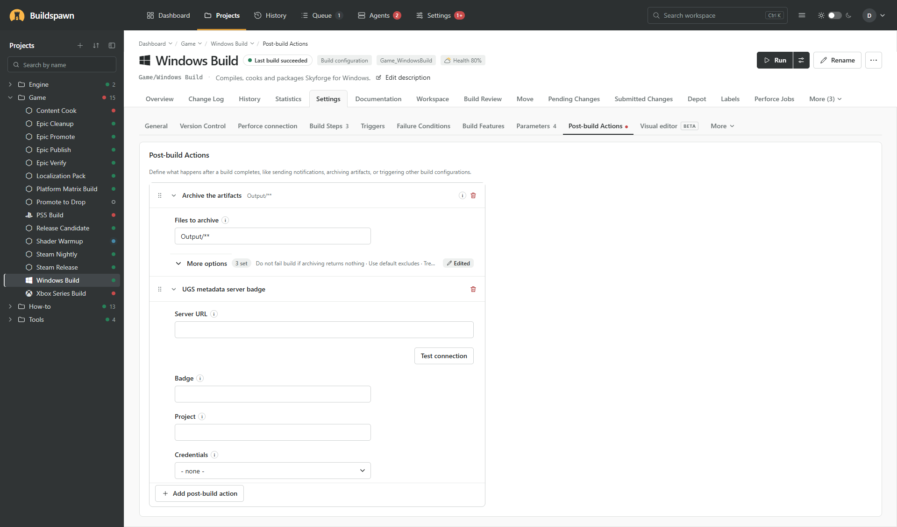

UGS metadata server badge
A post-build action that shows the result of a build as a badge next to a changelist in UnrealGameSync (UGS).
When to use it
Use it when your team works with Unreal Engine and Perforce, and developers use UnrealGameSync to pick a good changelist to sync. A badge such as Editor or Win64 shows next to each changelist: Starting while the build runs, then Success, Failure or Skipped. The metadata server is the small UGS service that stores these badges.
How to set it up
- Open the build configuration and go to Settings › Post-build actions.
- Click Add post-build action and choose UGS metadata server badge.
- Fill in the Server URL, the Badge name and the Project.
- Click Test connection. It says Connected. The metadata server uses API version N.
- Click Save.

Every field
| Field | What it does | Default | Example |
|---|---|---|---|
| Server URL | The metadata server. You can use build parameters in it. | Empty (required) | http://ugs.studio.example:3000 |
| Badge | The badge name shown in UGS. | Empty (required) | Editor |
| Project | The depot path of the project folder, not the .uproject file. | Empty (required) | //UE5/Main/Games/Skyforge |
| Credentials | Optional. A Secret text credential sent as a bearer token. UGS metadata servers usually run in a closed network and need none. | None | ugs-token |
| Button Test connection | Checks the server and the credentials. | - | - |
A worked example
The Windows Editor build configuration syncs //UE5/Main from Perforce and builds the editor. The post-build action uses Server URL http://ugs.studio.example:3000, Badge Editor and Project //UE5/Main/Games/Skyforge. In UnrealGameSync, each changelist the build covers gets an Editor badge.
What you see when it runs
- When the build starts, the badge is set to Starting. The log says Badge Editor set to Starting for change 15204.
- When it ends, the badge becomes Success (the build is successful or unstable), Failure, or Skipped (the build was stopped).
- The badge links back to the build page.
- One badge is posted for each Perforce changelist the build used.
For badges that come from a BuildGraph script, use Post badges on the Unreal Engine step instead.
Problems and fixes
| Problem | What to do |
|---|---|
| This build has no Perforce change, so no badge is posted. | The badge only works for Perforce builds. Add a Perforce root. |
| The UGS badge needs a server URL, a badge name and a project. | Fill in all three fields. |
| Could not post the badge ... | Read the reason after it. Check the address with Test connection. |
| The credentials ... were not found. | Pick an existing credential, or clear the field. |